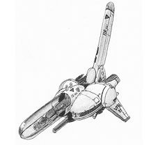

11 |
ファランクスとは |
 |
● ファランクス「A-144PHALANX」 A-144は２２１９年の連合政府制圧戦時に活躍した戦闘機Ｆ-38/Ｋ1に変わる次期主力戦闘機として開発された、全く新しい概念のパワーユニットを搭載する多目的戦闘デバイスである。 このパワーユニットは、待機や重力の有無を問わず、連続120時間の作戦行動をとることができる。主翼を持たない独特のフォルムは、力場を機体の回りにはり、そのテンションを分散させてバランスをとるという飛行概念のためである。
2271年のロールアウト以降実践とマイナーチェンジを重ね、最も信頼のある機体として今回の作戦の為に新仕様を施された。 このＴＹＰＥ－Ｒは可変武装システムＩＯＣＳと大出力パワーユニットを搭載した歴代のＡ-144中最も重装備のものとなった。
● 謎の外宇宙生命体 彼らの軍隊の指令中枢であるこの物体は、推定全長200kmを超すであろうという巨大なもので、生命反応もその巨体全体を包み込んでいた。 船や建造物と見るよりは大きな生命体と思ったほうが良いかも知れない。 彼らは「人」のように個体を持たないで、小さな物体も大きな船のような物もすべて一つの意志のもとに行動しているようである。
● GODEYE 2217年に建造された特殊戦術要塞。連合政府制圧戦用に造られた。このクラスの要塞は他にもSKALEYE、LUNATICの2機が存在したがいずれも連合政府に沈められた。 艦主中央に位置する3っつの大型砲門は制圧戦時には惑星を一つ消滅させた程の物だが、戦後60年経った現在では老朽化のため使用が不可能になっている。 |
 |
 |
 |